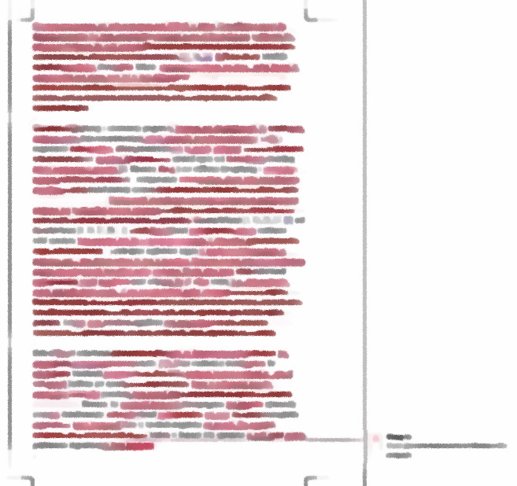

public: True class: center, middle # 软件工程研究简介 蒋炎岩 <jyy@nju.edu.cn> <div class="row justify-content-md-center"> <div class="center author-block"> <p><a href="http://www.nju.edu.cn/">南京大学</a></p> <img class="inline-img" height="64px" src="../static/img/nju.png"/> </div> <div class="center author-block"> <p><a href="http://cs.nju.edu.cn/">计算机科学与技术系</a></p> <img class="inline-img" height="64px" src="../static/img/njucs.jpg"/> </div> <div class="center author-block"> <p><a href="http://moon.nju.edu.cn/">计算机软件研究所</a></p> <img class="inline-img" height="60px" src="../static/img/ics-nju.png"/> </div> </div> --- # 个人简介 蒋炎岩 <jiangyy@outlook.com> * 临时工，计算机软件研究所 ([ICS](http://ics.nju.edu.cn)) * 过气 ACM-ICPC 老选手 (<del>曾经年轻过</del>) * JSOI/南京大学 ACM-ICPC 集训队教练 ---- 研究方向 * 软件工程 (废话) * 软件测试与分析/运行时系统/程序合成 --- # 课程主页 永久地址：`http://ics.nju.edu.cn/~jyywiki/wiki/GSER2019` * 收藏永久地址，会重定向到私人 IP ---- .red[重要信息均在课程网站发布] --- # 本讲概述 > 为什么要重做这门课？ > > * .red[研究生基本功训练普遍不合格]：当我问起组里的研究生们，让他们每人推荐 3-5 篇经典的重量级论文时，绝大部分竟然只能拿出贡献很弱的论文；写出的东西完全不可读 > * .red[Raise the bar]. “跟 bar 低的人在一起久了，自己都觉得自己变 low 了” ---- 本讲概述 * 吹牛逼 * 课程 policy 介绍 & 劝退 --- class: center, middle # 软件工程研究 --- # 什么是软件？什么是软件工程？ (我也不知道) --- # 软件工程研究 解决软件工程 (就是码农活) 里的问题 * 让码农.red[更快] (productivity) 地生产.red[更好] (quality) 的软件 * 在时间、资源、人员的限制条件下构建满足用户需求的软件系统。 ---- 看起来很抽象，但当你打开电脑时，软件工程研究就在你身边 * 没有软件工程手段，大型软件很难被开发出来、很多 bug 难以被消除 * 操作系统在收集 profiling data 用于诊断 * 代码编辑器提供了补全 * 使用各种测试、调试工具 * 持续集成、开源社区…… --- # 软件工程是个应用学科 从其他领域，例如.red[系统] (Systems) 和.red[程序设计语言] (Programming Languages) 中研究得到的各类机制解决软件中的问题 * 有时候 System/PL 本身也解决软件工程问题 (测试、代码分析……) ---- For *fun* and *profits* * 做一些好玩的、对程序员有用的东西 * 软件工程强调 usefulness (有用) --- class: center, middle # 做研究的过程 --- # 做研究的过程 理想的研究生生活： * 老板给方向 → 找到问题 → 提出解决方案 → 实现代码 → 做实验 → 写论文 → 发表 -- count: false ---- 实际： * 老板给方向 → (.blue[坑]) → 找到问题 → (.blue[不是问题/已经解决]) → 提出解决方案 → (.blue[找不到好的方法]) → 实现代码 → (.blue[各种bugs]) → 做实验 → (.blue[实验效果差]) → 写论文 → (.blue[审稿人丑拒]) → 发表 * JYY [读博那些事儿](https://zhuanlan.zhihu.com/p/82579410) (各种坑) --- # 万事开头难：解决什么问题？ 好问题来源于生产实践 * 巧妙型：卧槽，从来没有人想过这还是个问题啊！不看不知道，一看吓一跳！ (.red[适合智者]) * 硬核型：大家已经试图解决一个问题几十年了，但现有技术都不灵光，我要试着克服一下！ (.red[适合强者]) * 灌水型 (1)：让我把这几个已有的东西拼在一起试试，看有没有啥效果 * 灌水型 (2)：这个问题已经做烂了，让我再从犄角旮旯里挖出一个 scope，提高 1%，然后再死命把故事说圆 --- # 有了问题之后 能力强劲 (good problem solver) * 已解决 90%，剩下自己努力一下 ---- 能力弱鸡 (技能储备有限) * 好难…… * 更难的是，老板通常会判断一件事能不能作成，你搞不定就会吐槽你！ * 积极开展自救，骚扰师兄，骚扰老板 --- class: center, middle # 毒鸡汤 (画大饼) --- # 经典案例分享：什么是 PhD Imagine a circle that contains all of human knowledge: .center[<img src="../static/wiki/gser/2019/img/phd-1.jpg" width="500px"/> ] --- # 经典案例分享：什么是 PhD By the time you finish elementary school, you know a little: .center[<img src="../static/wiki/gser/2019/img/phd-2.jpg" width="500px"/> ] --- # 经典案例分享：什么是 PhD By the time you finish high school, you know a bit more: .center[<img src="../static/wiki/gser/2019/img/phd-3.jpg" width="500px"/> ] --- # 经典案例分享：什么是 PhD With a bachelor’s degree, you gain a specialty: .center[<img src="../static/wiki/gser/2019/img/phd-4.jpg" width="500px"/> ] --- # 经典案例分享：什么是 PhD A master’s degree deepens that specialty: .center[<img src="../static/wiki/gser/2019/img/phd-5.jpg" width="500px"/> ] --- # 经典案例分享：什么是 PhD Reading research papers takes you to the edge of human knowledge: .center[<img src="../static/wiki/gser/2019/img/phd-6.jpg" width="500px"/> ] --- # 经典案例分享：什么是 PhD Once you’re at the boundary, you focus: .center[<img src="../static/wiki/gser/2019/img/phd-7.jpg" width="500px"/> ] --- # 经典案例分享：什么是 PhD You push at the boundary for a few years: .center[<img src="../static/wiki/gser/2019/img/phd-8.jpg" width="500px"/> ] --- # 经典案例分享：什么是 PhD Until one day, the boundary gives way: .center[<img src="../static/wiki/gser/2019/img/phd-9.jpg" width="500px"/> ] --- # 经典案例分享：什么是 PhD And, that dent you’ve made is called a Ph.D.: .center[<img src="../static/wiki/gser/2019/img/phd-10.jpg" width="500px"/> ] --- # 经典案例分享：什么是 PhD Of course, the world looks different to you now: .center[<img src="../static/wiki/gser/2019/img/phd-11.jpg" width="500px"/> ] --- # 经典案例分享：什么是 PhD So, don’t forget the bigger picture: .center[<img src="../static/wiki/gser/2019/img/phd-12.jpg" width="500px"/> ] .center[(Go change the world)] --- # 摆正心态 我是 master student 啊，关我 X 事？ * 做研究 = 解决世界上没有解决过的困难问题 ---- 国内 master student 的定位 * 参与到一份重要的研究工作/项目中 * 如果可以，独立发表一篇研究论文 ---- 灌水的风气 * 把 XXX 拿来改改，弄一个东西就完了 * 这门课的一个目标就是.red[纠正大家的品味 (taste)] --- class: center, middle # Reading, Writing, and Hacking --- # Reading List [阅读列表链接](GSER2019#EMSE)，包括五个主题，每个主题 6 篇论文 (并不完全正交) * Empirical software engineering (EMSE) * Software engineering process (SEP) * Formal methods (FM) * Software testing and analysis (STA) * Software maintenance and evolution (SME) ---- 我们准备的论文是“最好”的论文，培养大家的品味 (taste) * novelty * significance * “没想到还有这种操作！” --- # [How to Read a Paper](/static/wiki/gser/2019/files/how-to-read-a-paper.pdf) Three-pass approach * 第一遍 (非常快速)：category, context, correctness, contributions, clarity * 第二遍 (理解内容)：主要方法、结论、证据等 * 第三遍 (virtually re-implement)：考虑每一个细节如果是自己，应该怎么做 ---- 新手会.red[非常困难] * 英文阅读障碍 (生词查字典、多读) * 贡献把握不准 (常见问题) * 基础不足 (我们使用了 XXX 方法，但 XXX 方法是什么？？) --- # Reading: 建议 功利型：读论文 (必要) * “virtually re-implement” 纠正自己的误区 * 很多 (尤其是近期) 的论文都有会议报告的视频/音频 * 他们会提炼问题、研究贡献、组织逻辑 * 首先，构思自己会如何讲，然后观看视频/音频 * 思考为什么论文作者讲得好/不好 ---- 不功利型：读一切 * [Hacker News](https://news.ycombinator.com/), [Stackexchange](https://cs.stackexchange.com/), ... * [Communications of the ACM](http://cacm.acm.org) --- # Writing: 认清现实 承认自己的写作很烂，然后死命练习 (之后会在课程中介绍) * 常见问题：逻辑混乱、缺少论证、术语混乱、verbose、…… .center[ ] .center[(JYY 的第一篇论文)] --- # Writing: 排版强迫症 LaTeX 用户的经验是看得出来的 * 所有 conference/journal 中，PL 是排版最好的 (学习) * LaTeX = 编程, Tikz = 编程, ... .center[<img src="../static/wiki/gser/2019/img/tikz-example.png" width="500px"/> ] --- # Hacking: 压死骆驼的最后一根稻草 完成一份软件工程研究，可能需要编写数千行的代码 * .red[没什么难的，RTFM, RTFSC, 花点时间就完事了] * 实际操作起来哪有那么容易啊？？？我要上课、谈恋爱、打游戏、刷题找工作…… ---- 举一些我们组的工作 * 拦截系统调用、虚拟磁盘获得 block trace、磁盘镜像对比 * 修改 Android Runtime 提供调试接口 * 修改正则引擎获得匹配 trace、遗传算法搜索正则表达式 * 使用 QEMU 快照机制进行文件系统测试 * 借助 Clang/LLVM 内部 API 分析内联汇编语义 * …… --- class: center, middle # Policies --- # Reading：课堂论文报告 (30%) 每次 reading class 报告 4 篇论文 (中文)，类似于 conference talk * 17 分钟 + 3 分钟 Q/A，.red[无法讲完所有细节] * 必须把论文解决的问题、核心贡献和最精彩的地方讲清楚 ---- 每个同学每个主题 (EMSE, SEP, FM, STA, SME) 分配到一篇报告论文 (学期共 5 篇) * 提前公布每个同学报告的论文，随堂选出报告人 * .red[所有同学都需要提交 slides] --- # Writing：Research Proposal (30%) Writing phase * 使用任何工具撰写一个版本的 research proposal * 根据课堂学习内容修改逻辑和文字 * 使用 LaTeX/Tikz/Pgfplots 完成排版和图表绘制 Reviewing phase * 同行评议 (peer review)，每个同学评议三个其他同学的提交 ---- PC Charis (任课老师) 最终评选出 * .blue[Distinguished Proposal Award] (< 10%) * .blue[Distinguished Reviewer Award] (< 10%) --- # Hacking：Programming Assignments (40%) 工具使用： * 语法树 * 动态分析 * 静态分析 * Open Projects (演示) ---- (设计中) --- # Policies & 劝退 .red[这门课很难] * 水学分的请退课 * 不想做软件工程相关研究的请退课 ---- .red[任何被要求准备报告的同学都可能随堂被抽到] * Reading sessions 原则上必须到课，特殊情况提前请假 * 其他随意，但作业必须交 ---- .red[需要阅读所有 30 篇论文] * 经典中的经典 * 测试 motivation：快乐 or 痛苦？